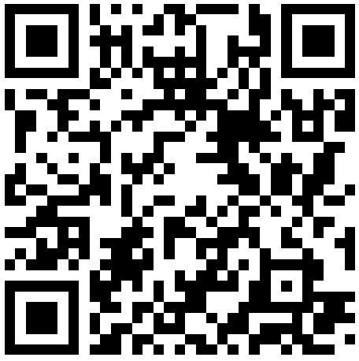

Deze pagina bevat alle bestanden en links voor de workshop AI voor studenten middelbaar onderwijs.
Vragen anoniem beantwoorden
Deelnemen aan de vragen kan mobiel of via je computer.
-
Computer: open wooclap.com
Mobiel: scan de QR-code op de slides

Zelf AI systemen trainen
AI for Oceans
Onder andere via AI for Oceans kan je zelf een AI systeem trainen.
Bij AI for Oceans train je een AI-systeem om te herkennen wat thuishoort in de zee en wat niet, probeer dit zelf eens door de lessen 2, 3 en 4 uit te voeren.
Google Teachable Machine
Google biedt ook een tool aan waarmee je zelf een AI-systeem kan trainen, maar in tegenstelling tot AI for Oceans mag je hier zelf kiezen wat je hem zal leren.
Opdracht: start in Google Teachable Machine een Image Project om een hond en een wolf te onderscheiden.
Download de onderstaande zips met afbeeldingen, pak ze uit en gebruik deze in je project: